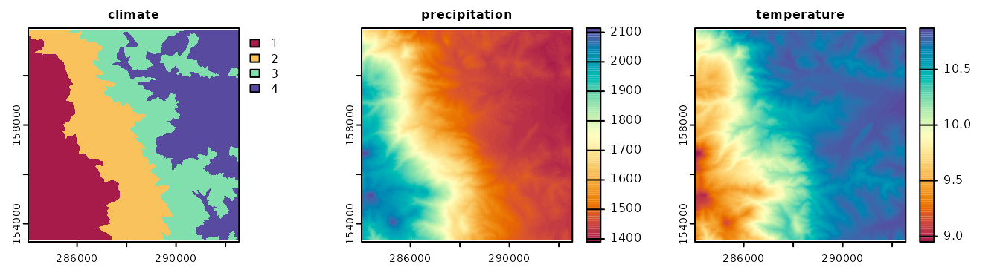
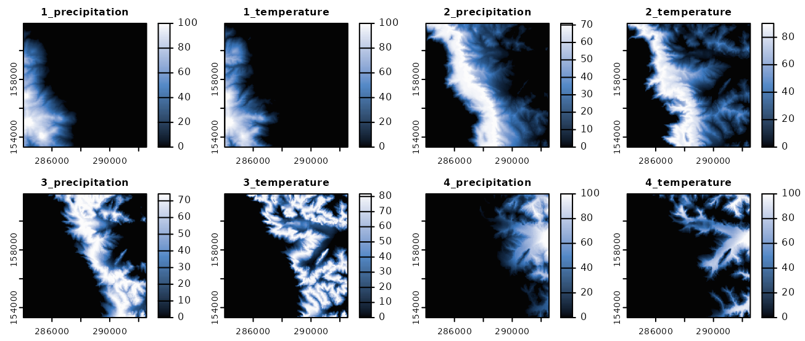
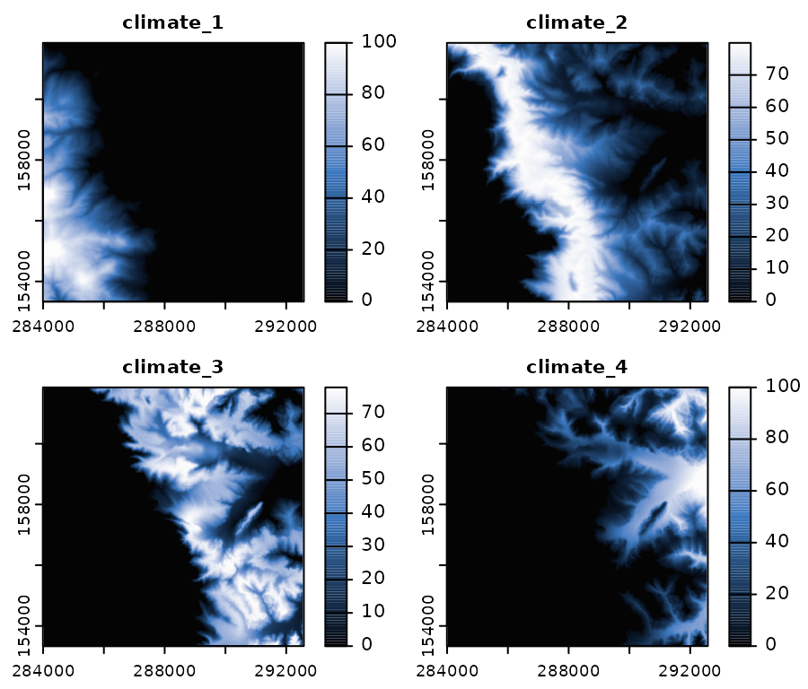

Spatial Signature of Classification Units
rassta: Raster-based Spatial Stratification Algorithms
Source:vignettes/signature.Rmd
signature.RmdGet the data required for this vignette
# Compressed folder with files from rassta’s installation folder
wasoil <- system.file("exdat/wasoil.zip", package = "rassta")
# Directory for temporary files
o <- tempdir()
# Copy compressed folder to directory for temporary files
file.copy(from = wasoil, to = o)
#> [1] TRUE
# Extract files to subfolder
d <- paste(o, "/rassta", sep = "")
unzip(paste(o, "/wasoil.zip", sep = ""), exdir = d)The spatial signature is a relative measurement of the correspondence between any XY location in geographic space and the landscape configuration represented by a given classification unit. The spatial signature represents a first-level landscape correspondence metric. To estimate the spatial signature of a classification unit, a distribution function for each variable used to create the unit must be selected. Then, each selected distribution function must be estimated and predicted across geographic space. Finally, all the predicted distribution functions must be aggregated into a single measurement, which gives the spatial signature of the unit.
Selection of Distribution Functions
For each classification unit in a set, rassta allows to select one distribution function from the following:
- The probability density function (PDF)
- The empirical cumulative distribution function (ECDF)
- An inverted version of the empirical cumulative distribution function (iECDF)
The rationale behind the selection process is that given a classification unit Z and a variable X, the ‘optimal’ landscape configuration for the occurrence of Z can be associated with typical values of X within Z. Thus, the position of a value within the distribution function of X is an indicator of how typical the value is within Z. This rationale involves three important assumptions when selecting distribution functions:
- If the PDF is selected, the classification unit will be mainly associated with the variable’s values approaching the peak of the curve.
- If the ECDF is selected, the classification unit will be mainly associated with the variable’s values approaching +\(\infty\).
- If the iECDF is selected, the classification unit will be mainly associated with the variable’s values approaching -\(\infty\).
Currently, rassta allows the interactive and automatic selection of distribution functions for each classification unit in a set. The interactive selection is performed through a shiny app, while the automatic selection is performed based on the following criteria:
- PDF = when the mean (or median) of the variable’s values within the classification unit is neither the maximum nor the minimum of all the mean (or median) values across all the units.
- ECDF = when the mean (or median) of the variable’s values within the classification unit is the maximum of all the mean (or median) values across all the units.
- iECDF = when the mean (or median) of the variable’s values within the classification unit is the minimum of all the mean (or median) values across all the units.
The code below demonstrates the automatic selection of distribution functions for a set of 4 climatic classification units constructed using two variables (annual precipitation and mean annual temperature).
# Load rassta and terra packages
library(rassta)
library(terra)
# Multi-layer SpatRaster with 2 climatic variables
var <- c("precipitation.tif", "temperature.tif")
vardir <- paste(d, var, sep = "/")
clim.var <- rast(vardir)
# Single-layer SpatRaster with 4 climatic classification units
clim.cu <- rast(paste(d, "/climate.tif", sep = ""))
# Automatic selection of statistical distribution functions
clim.difun <- select_functions(cu.rast = clim.cu,
var.rast = clim.var,
mode = "auto"
)The classification units, variables, and selected distribution functions can be visualized as demonstrated in the code below.
# Plot climatic classification units and variables
plot(c(clim.cu, clim.var), col = hcl.colors(100, "Spectral"), nc = 3,
mar = c(1.5, 1.5, 1.5, 5)
)
# Selected distribution functions
knitr::kable(clim.difun$distfun, filter = "none", selection = "none")| Class.Unit | Variable | Dist.Func |
|---|---|---|
| 1 | precipitation | ECDF |
| 1 | temperature | iECDF |
| 2 | precipitation | |
| 2 | temperature | |
| 3 | precipitation | |
| 3 | temperature | |
| 4 | precipitation | iECDF |
| 4 | temperature | ECDF |

Estimation and prediction of distribution functions
Once a set of distribution functions has been selected for a classification unit, the estimation and prediction of these functions can be performed with predict_functions(). Given a classification unit Z and a variable X, predict_functions() first estimates the selected distribution function for X, using only observations selected from within Z. Subsequently, predict_functions() fits a locally-estimated scatterplot smoothing (LOESS). The LOESS is fitted using the observations from X as explanatory values and the values from the corresponding distribution function as response values. Finally, the fitted LOESS is predicted on the complete geographic space supported by the raster layer of X. This process is repeated for each variable used to construct Z.
The code below demonstrates the estimation and prediction of distribution functions with predict_functions().
# Multi-layer SpatRaster of climatic variables and classification units
clim.all <- c(clim.var, clim.cu)
# Ouput table from select_functions()
df <- clim.difun$distfun
# Predicted distribution functions for climatic variables
clim.pdif <- predict_functions(cuvar.rast = clim.all, cu.ind = 3,
cu = df$Class.Unit,
vars = df$Variable,
dif = df$Dist.Func
)
plot(clim.pdif, col = hcl.colors(100, "Oslo", rev = TRUE), nc = 4,
mar = c(1.5, 1.5, 1.5, 3.5)
)
Aggregation of predicted distribution functions
The function signature() calculates the spatial signature of a given classification unit by aggregating all the predicted distribution functions associated with the unit.
# Spatial signatures from predicted distribution functions
clim.sig <- signature(pdif.rast = clim.pdif,
inprex = paste(seq(1, 4), "_", sep = ""),
outname = paste("climate_", seq(1, 4), sep = "")
)
# Plot spatial signatures
plot(clim.sig, col = hcl.colors(100, "Oslo", rev = TRUE), nc = 2,
mar = c(1.5, 1.5, 1.5, 3.5))
The argument inprex allows the identification of layers from a SpatRaster object that represent predicted distribution functions for each classification unit in a set. Similarly, the argument outname assigns a unique name to each layer in the resulting SpatRaster of spatial signatures.
Clean files from temporary directory
References
- B.A. Fuentes, M.J. Dorantes, and J.R. Tipton. rassta: Raster-based Spatial Stratification Algorithms. EarthArXiv, 2021. https://doi.org/10.31223/X50S57